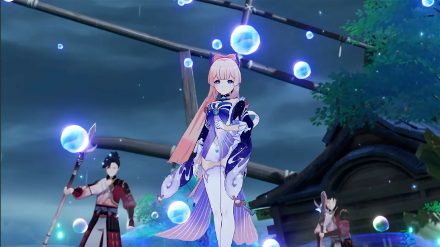

Здесь описаны только те события, которые имеют отношение к прогрессу главного квеста — «Задания архонтов», а также избранные «Задания мира», которые напрямую примыкают к основной истории

Пролог
Брат и сестра, мироходцы, сталкиваются с некой неизвестной богиней. После короткой битвы она лишает выбранного игроком персонажа всех сил, а другого — похищает. Главный герой, известный после этого просто как Путешественник, попадает в мир Тейват. Проходят месяцы бесплодных скитаний, прежде чем он вытаскивает из озера маленькое существо по имени Паймон. Она предполагает, что семеро архонтов Тейвата могут помочь протагонисту в поисках похищенного родственника. Дуэт берёт курс на вольный город Мондштадт.
У первой попавшейся по дороге статуи архонта Анемо путешественник входит с ней в резонанс и получает силы ветра. Дальше на пути попадаются огромный дракон и подозрительный тип в зелёном, который будто бы общался с ним. Близ Мондштадта нас встречает Эмбер, скаут рыцарей Ордо Фавониус. После небольшой помощи с уничтожением лагеря хиличурлов она отводит-таки нас в город и дарит планер. После того, как путешественник осваивается с ним, дракон — известный горожанам как Ужас Бури — атакует, выпуская сильные шторма. Чей-то загадочный голос даёт протагонисту силы бесконечного полёта, и он прогоняет дракона.
Путешественник удостаивается аудиенции с Джинн, главой рыцарей и фактической правительницей города. Та предлагает ослабить дракона путём зачистки трёх храмов ветров, где завелась всякая гадость. К партии присоединяются библиотекарша Лиза и ехидный капитан рыцарей Кэйя. Фатуи, группа дипломатов из царства Снежная, предлагают просто убить дракона, но Джинн им отказывает. После зачистки партия встречает на улицах города уже знакомого путешественнику парня в зелёном — барда Венти. Он исполняет старинную песню, раскрывая, что дракона на самом деле зовут Двалин, и он один из четырёх хранителей ветров Мондштадта, которого заколдовали маги Бездны.
Венти говорит, что с помощью Небесной Лиры может вернуть дракона в нормальное состояние. Главгерой пытается похитить Лиру из Собора, но его опережают Фатуи, заодно подняв тревогу, и от стражи герой скрывается в таверне, принадлежащей богатому местному виноделу, Дилюку. Тот привлекает в союзники Джинн. Партия выдвигаться сначала возвращать Лиру в логово похитителей, потом на утёс Звездолова, но возвращение Двалина прерывается магом Бездны, который ломает Лиру. Всё было зазря, теперь остаётся лишь действовать грубой силой. Джинн окончательно опознаёт в Венти Барбатоса, архонта Анемо.
Венти снимает завесу с логова Ужаса Бури — развалин старого Мондштадта. Победив кучу сильных противников и решив множество прыжковых головоломок, герои проникают в лежбище дракона и вступают в схватку с ним. После того, как проклятая застывшая кровь в старых ранах оказывается разбита, дракон вновь становится лоялен Барбатосу-Венти.
Триумфальное возвращение путешественника в город, однако, оказывается испорчено. Откуда ни возьмись появляется Синьора, начальница Фатуи. По заданию своей госпожи, Крио Архонта Царицы, она похищает у Венти Сердце Бога — основную часть его сил. Путешественник и архонт-бард долго говорят, пока второй восстанавливается. Но ничего нового про Неизвестную Богиню и родственника протагониста мы не узнаём.
Дальше путь лежит в гавань Ли Юэ.
Том 1. Глава 1
Партия прибывает в город в довольно удачное время. Повсюду только и говорят о том, что скоро должна начаться церемония сошествия Архонта — Властелин Камня Моракс, который, в отличие от анархиста-Барбатоса, лично правит своими владениями, пусть и является жителям только раз в год. Однако на церемонии происходит непредвиденное: вместо Властелина Камня на площадь падает лишь его тело.
Главный герой осознаёт, что у него есть мотив убивать Архонта и, значит, он под большим подозрением. Он делает безуспешную попытку сбежать, чем эти подозрения лишь усиливает. Нас спасает Чайлд-Тарталья, предвестник Фатуи, куда более дружелюбный по сравнению с прошлыми представителями этой организации. Он советует нам оповестить о случившемся Адептов — помощников Властелина Камня, проживающих глубоко в горах, и выдаёт «ксиву» — Печать Согласия.
Адепты воспринимают новость не очень хорошо и даже подумывают о том, чтобы сравнять Ли Юэ с землёй. Когда партия возвращается в город, Тарталья говорит, что подозревает Цисин — семь крупнейших торговых домов страны, поведение которых в прошедшие после убийства дни было довольно странным.
Том 1. Глава 2
Постепенно город возвращается к привычной жизни. Начинается подготовка к церемонии вознесения — похоронам Архонта. Тарталья знакомит нас с Чжун Ли, организатором похорон. Путешественник выступает в роли мальчика на побегушках, закупая и доставляя необходимые для церемонии вещи. В процессе даётся достаточно намёков на то, что Чжун Ли — личность куда более старая, чем кажется на первый взгляд, и знает гораздо больше, чем говорит. Также в ходе этих квестов мы чиним баллисту — древнее мощное оружие времён войн Архонтов.
Когда всё нужное наконец подготовлено, партия садится ужинать в ресторан. Неожиданно появляется посланница от Нин Гуан, самой могущественной среди Цисин. Она вызывает путешественника к себе в летающий дворец на разговор.
Том 1. Глава 3
Найти дорогу туда оказывается не очень просто. При встрече бизнесвумен начинает оправдываться и советует проверить определённые развалины. Там мы обнаруживаем, что Фатуи подделывают Печати Согласия. Мы ищем Тарталью и находим его в Золотых Палатах — месте чеканки моры, где Цисин спрятали тело Властелина Камня. Русич пытается добыть оттуда Сердце Бога, но его там не оказалось. В ярости он активирует самую мощную боевую форму, но путешественник и сотоварищи успешно превозмогают и её. Тогда Тарталья переходит к плану «Б» и чтобы выманить Гео Архонта, он при помощи поддельных Печатей Согласия будит древнего Архонта Вихрей Осиала, который был заключён Мораксом под архипелагом Гу Юнь. Осиал, будучи старым врагом Властелина Камня, собирается уничтожить оберегаемый им город и устраивает мощный шторм.
Ли Юэ грозит затопление. Выбравшись из Золотых Палат, путешественник с удивлением обнаруживает, что Адепты и Цисин отставили разногласия в сторону. Герои пытаются расстрелять ктулхоида из той самой баллисты. Фатуи делают последнюю попытку позлодействовать и идут в атаку на неё, но герой вместе с другими бойцами отгоняют их. Даже силы баллисты не хватает на то, чтобы упокоить божество, и Нин Гуан принимает решение таранить его своим любимым летающим дворцом, после чего всё наконец успокаивается.
Мы встречаемся в Банке Снежного Королевства с Чжун Ли, Тартальей и уже знакомой нам Синьорой. Первый признаётся нам, что он Властелин Камня Моракс и фальсифицировал свою смерть и затем, закрывая некую сделку, самолично отдаёт своё Сердце Бога в руки Фатуи, при этом отказываясь говорить нам, что получил взамен. Все события арки были срежиссированы им самим с целью «уйти в отставку» и побудить Цисин взять на себя больше ответственности за происходящее в стране, что и удалось с большим успехом. На (фальшивой) церемонии вознесения он также сообщает нам, что архонт Инадзумы начала откровенно чудить, издав на днях указ о конфискации в своей стране всех Глаз Бога. Путешественник уходит, размышляя над тем, как возможно попасть в самоизолировавшееся государство.
Том 1. Глава 4
Мы возвращаемся в Мондштадт. В городе — только и разговоров, что о странном путнике. Мы встречамся с незнакомцем в таверне. Он представляется путешественнику Дайнслейфом, говорит, что сражается с Бездной и отмечает, что в Ли Юэ герои с ними не сталкивались, а значит, Орден получил приказ избегать таких встреч. Ещё он просит дать ответы на три вопроса о нашем отношении к событиям прошлых глав. Путешественник и Даин рыщут по всему Мондштадту в поисках чудовища под названием Вестник Бездны, но так ничего и не находят и расстаются.
Некоторое время спустя в Ли Юэ путешественник принимает поручение разобраться с отмороженными «Похитителями сокровищ», которые решили ограбить сам Орден Бездны. В руинах мы, однако, находим лишь труп нанятого ими знаменитого вора рядом со странной перевёрнутой статуей Барбатоса. На путешественника нападает тот самый Вестник Бездны, но после короткой битвы, узнав его, быстро сбегает. На выходе из руин мы снова встречаемся с Дайнслейфом. Он говорит нам, что Орден зачем-то разбирает стражей руин. С тела одного из магов Бездны мы подбираем письмо, из которого узнаём, что Орден планирует создать боевую машину из ядра прототипа стражей руин, той самой перевёрнутой статуи и тела уже знакомого нам Осиала, архонта вихрей. Мощь этого механического бога должна быть достаточной, чтобы разобрать весь Тейват на камешки. Протагонист неожиданно признаётся Даину (и игроку заодно), что в первый раз проснулся 500 лет назад, во время падения Каэнри’ах и что события начала пролога были не попаданием в этот мир, а попыткой его покинуть.
Партия снова направляется в Мондштадт, разузнать о пропаже статуи. Барбара рассказывает нам, что одна из статуй действительно пропала, и что когда-то в логове Ужаса Бури кто-то стрелял огненными шарами. Затем мы идём на подмогу Ордо Фавониус, которые сражаются с Бездной в Вольфендоме. Вестник пытается промыть мозги Волку Севера, как это ранее сделали с Двалином, но мы успешно отгоняем его. Волк рассказывает, что некогда бился на арене с очень мощным стражем. В логове Ужаса Бури путешественник, Даин и Паймон находят искомый прототип. Даин извлекает из него ядро и оставляет при себе, утверждая, что так оно будет спрятано надёжнее.
Наконец, в попытках что-нибудь сделать с перевёрнутой статуей, мы возвращаемся в уже знакомые руины. Вестник Бездны, конечно же, поджидает нас там. Когда после жаркого сражения мы уже готовы его добить, на выручку ему приходит Принц Бездны, то есть брат протагонистки. Он называет Дайнслейфа Сумеречным Мечом: тот когда-то был одним из королевской гвардии Каэнри’ах, но не смог защитить свою страну, которая была разгромлена богами и деградировала в Орден Бездны.
Главгерою же родственник говорит завершить своё путешествие и узнать все тайны мира, в то время как он будет выполнять миссию Бездны. Дайнслейф прыгает в портал за ним, а путешественница не успевает пройти сквозь него.
Том 2. Пролог
Мы наконец-то снова начинаем размышлять над тем, как попасть в Инадзуму. Ацуко, единственная известная жительница этой страны, говорит, что с этим может помочь Бэй Доу, капитанша Флота Южного Креста. Бэй Доу вместе со своим временным помощником, Каэдэхарой Кадзухой, заманивает путешественника на свой бойцовский турнир. Призом является мёртвый Глаз Бога, но герою он не нужен и Бэй Доу соглашается организовать нам экспедицию до Инадзумы.
Мы легко и быстро раскидываем на турнире всех претендентов, но перед финальной битвой оказывается, что Глаз Бога украли. Настигнув вора, мы побеждаем его — вор оказывается неспособен пробудить Глаз Бога, даже будучи зажатым в угол. Кадзуха рассказывает нам, что этот Глаз Бога принадлежал его другу, бросившему вызов Сёгунше, а сам он покинул страну и стал ронином, чтобы не отдавать его.
Бэй Доу отбывает в Гавань Ли Юэ, чтобы согласовать экспедицию с Нин Гуан.
Том 2. Глава 1
Преодолев закрывающие Инадзуму шторма, корабль Бэй Доу бросает якорь в Рито — единственном порту закрытого государства. Капитанша быстро отдаёт нас на поруки Томе — кому-то вроде местного авторитета и отчаливает назад, так как на борту всё ещё находится разыскиваемый преступник в лице Кадзухи. Пограничная служба комиссии Кандзё бесцеремонно пытается ограбить путешественника, спасает только протекция со стороны Томы. Мы разбираемся с коррупционной схемой местного сборщика налогов и попадаем к главе комиссии, управляющему островом. Тот не больно-то спешит выпускать нас на большую землю, но путешественнику помогает его дочь.
Вырвавшись на главный в стране остров Наруками, мы с Томой сперва осматриваем статую, полную конфискованных Глаз Бога, а затем встречаемся с Аякой Камисато, замглавы комиссии Ясиро. Девушка просит нас помочь как-то разобраться с Указом об охоте на Глаза и герой соглашается, но предварительно уточнив, что ни при каких условиях не будет участвовать в вооружённом восстании — видимо, сказался горький опыт в Ли Юэ. Мы встречаемся с тремя людьми, лишившимися Глаз и узнаём, что конфискация Глаза приводит к крайне неприятным последствиям — лишению памяти, изменениям в личности, или даже полному сумасшествию, и попутно знакомимся с Яэ, главной жрицей религии Наруками.
Следующее задание — вызволить из темницы мастера, делавшего фальшивые Глаза. Неоценимую помощь в этом оказывает Ёимия, хозяйка магазина фейерверков. Мы пересекаемся с Сарой Кудзё — офицером комиссии Тэнрё, и эта суровая на вид девушка отпускает нас, так как ей не понравилось, что её подчинённые пытали поддельщика.
Путешественник, Паймон, Тома и Аяка играют в продуктовую угадайку, а затем договариваются встретиться для обсуждения дальнейших действий через пару дней.
Том 2. Глава 2
Выполнив ряд побочных поручений, мы возвращаемся в чайный дом «Коморэ», но он встречает нас гробовой тишиной. Оказывается, комиссии Тэнрё захотелось добить количество конфискованных Глаз до красивого числа в сто штук, и они решили схватить Тому. Главгерой оказывается в безвыходном положении, бросает свои прежние притязания на цинизм, вламывается на церемонию и ввязывается в безнадёжный бой с самой Сёгуншей — она умеет отключать элементальные навыки и взрывы стихий. Каким-то чудом им с Томой удаётся улизнуть. Аяка пытается получить хоть какую-то выгоду от ситуации и отправляет нас налаживать контакты с сопротивлением Сангономия, которое борется против Охоты на внешних островах.
Сопротивление, как ни странно, принимает нас в свои ряды без каких-либо разговоров, даже не пытаясь заподозрить в герое шпиона сёгуната. Путешественник знакомится с полевым командиром Горо и немного натаскивает сопротивленцев в боевых искусствах; а затем на их лагерь нападают войска комиссии Тэнрё во главе с уже знакомой нам Сарой. Они уже готовы задавить нас числом, но сопротивление спасает появление кавалерии в лице лидера, Кокоми Сангономии в компании чуть ли не всего экипажа Бэй Доу.

Том 2. Глава 3
Путешественник плывёт на остров Ватацуми и представляется Кокоми как положено. Стратег делает нас лидером спецотряда. Мы чистим тылы Сопротивления от ронинов и слышим о том, что на фронте есть успехи. Выясняется, что Сопротивление спонсировали Фатуи, а успехи в боях объясняются использованием Глаз Порчи, и ещё что некоторые бойцы уже начали хворать из-за них. Тэппэй, самурай, подружившийся с главгероем ранее, и вовсе после пары битв превращается в глубокого старика (а в конце концов умирает).
Разъярённый путешественник отправляется на поиски мастерских, где клепают Глаза Порчи. Такая мастерская действительно находится, главгерой расшвыривает фатуистов и сталкивается лицом к лицу с предвестником Скарамушем. Тот, ехидно злословя, выпускает некий ядовитый газ, который, по-видимому, работает только на разъярённых людей. Путешественник падает без сознания, но успевает увидеть пришедшую на помощь Яэ. Мы приходим в себя, конечно же, в Великом Храме Наруками. Яэ наконец-то по-настоящему с нами знакомится, и рассказывает главный секрет Сёгунши: её истинное «я», Эи, находится в отдельном карманном измерении, куда нас и засосало во время случая с Томой.
Герой тренируется противостоять Сёгунше при помощи интересной элементальной машинки, копирующей её атаки. Затем, снова в храме, мы встречаемся с Сарой. Яэ обещает предоставить ей доказательства того, что клан Кудзё предал Сёгуншу. Миссию добыть эти доказательства же она взваливает на хрупкие плечи юной ниндзя Саю. Путешественник же проводит отвлекающий манёвр, взорвав самый большой фейерверк Ёимии перед штабом комиссии Тэнрё. Добытые Саю документы однозначно говорят о том, что Сёгунша не подозревает о ведущейся гражданской войне, а начальство Кудзё ведёт дела с Фатуи. Увидев их, Сара немедленно срывается на разборки с начальством клана. Глава даже не пытается отпираться, утверждая, что так для Инадзумы будет лучше.
Затем Сара (и мы за ней) ломится уже непосредственно в Тэнсюкаку, резиденцию Сёгунши. Оказывается, что та в этот момент принимает нашу любимицу Синьору. Синьора быстро вырубает Сару. Путешественник вызывает предвестницу на дуэль, как когда-то приятель Кадзухи сделал с самой сёгуншей. Оказывается, что родной Глаз Синьоры — Пиро, а сама она была в прошлом известна как Горящая алая ведьма. После жаркой битвы герой одерживает верх. Сёгунша хладнокровно казнит предвестницу. Путешественник в совершенно разбитом состоянии бредёт из дворца.
Со стороны города слышен какой-то странный шум. Сопротивление воспользовалось сумятицей в войсках сёгуната и идёт на штурм. Оказавшись в сердце стычки между Сопротивлением и Сёгуном, мы снова попадаем в карманное измерение Эи. Поначалу сражение всё так же сложно. Но затем Яэ как бы призывает на помощь герою силу всех хранящихся в статуе Глаз и, с этим мощнейшим баффом, мы превозмогаем. Архонт осознаёт, что её понимание «вечности» завело страну куда-то не туда и соглашается вернуть все Глаза хозяевам.
Том 2. Глава 4
Вернувшись с Инадзумы в Ли Юэ, путешественник узнаёт, что горнозаводская область Разлома начала вновь понемногу открываться[1]. Шахтёров, рискнувших туда отправиться, беспокоит, что хиличурлы стайками уходят куда-то вглубь шахт и не возвращаются. Интересный чиновник, поставленный у входа в шахты, приказывает нам ни в коем случае не присоединяться к разведывательной партии, не снимать барьер и не исследовать глубины шахт. Не выполнив его задание, мы постепенно пробираемся глубже и глубже в Разлом, исследуя его аномалии.
В конечном итоге путешественник натыкается на странный голубой шар. Предположительно, именно этот объект — древняя бомба Селестии и источник гадости, из-за которой Разлом закрыли в последний раз. Убрав его, мы проваливаемся на очередной уровень, где на нас на рояле из кустов из портала выскакивает старый знакомый — Дайнслэйф. Оказалось, что портал, в который он прыгнул в последний раз, вовсе не вёл в логово Ордена Бездны, а ядро прототипа стражей руин надёжно спрятано. Мы с Даином идём дальше вглубь. По пути видим тех самых уходивших хиличурлов. Они лежат плашмя. Даин объясняет, что хиличурлы — проклятые люди из древних королевств, и они приходят сюда умирать, так как их проклятие здесь слабеет. На нас нападают Теневые доспехи. Они явно защищают умирающих хиличурлов, а один из них и вовсе не атакует. Становится понятно, что эти монстры вовсе не заодно с Орденом Бездны.
Рядом с несколькими уже мёртвыми хиличурлами путешественник находит такой же цветок, что Принц Бездны носит на голове. Даин говорит, что это интейват, национальный цветок Каэнри’ах. Цветок как бы «делится» воспоминаниями. Итер, Принц Бездны, приказала изучить ослабление проклятия ради крохотного шанса превратить хиличурлов обратно в людей. Вестник и Чтец Бездны пытаются активировать устройство, якобы снимающее проклятие, но оно слишком вросло в сущности проклятых, и вместо очеловечивания устройство только причиняет хиличурлам (и Даину заодно) невыносимую боль. Встреченный ранее дружелюбный Теневой доспех оказывается Хальфданом, одним из подчинённых Даина. Ценою своей жизни он останавливает устройство, а путешественник вырубает его окончательно.
Даин удаляется отдыхать и лечить раны, а путешественник всерьёз задумывается над тем, что Итер выбрал слишком радикальные методы.